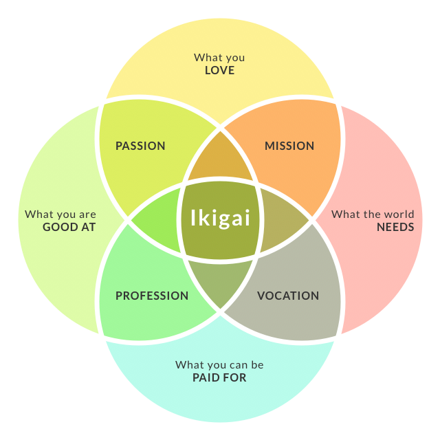

Learning Plan
My long term goal and career pathway?
I want to earn my daily bread in a way that does not exhaust me since what I do is in-line with my Ikigai:

I believe becoming a web developer brings me much more close to the center of this diagram.
My goal in the professional area (intersection of green and blue) is to earn the status of a senior developer within 5 years.
My strenghts and limitations in relation to learning
Strenghts:
- I have an analytical mind which helps me to understand new material
- I do have pre-knowledge and experience which makes it easier for me to associate new with existing knowledge.
- I am a disciplined learner
Limitations:
- I get tired really fast which makes it harder to work through new content and it affects memory.
- I have some bad memories from past learning experiences. Sometimes this leads to small panic attacks which hinder my ability to absorb new knowledge if not addressed.
What human skills I would like to see developed in myself while at Dev Academy
I'd be proud if I could achieve this single one: Become more of a co-creator and co-learner instead of work and learn in isolation.
My committement to how I will manage my workload in this programme to work productively and safely with other learners, facilitators and industry/community representatives
- Respectful: I have understanding of other people ideas, their situations and if life gets in the way.
- Helpful: I listen more than talk /explain (although this is hard for me ;-)). I help to the best of my capabilities.
- Flexible: I do not have kids or any other significant responsibilities at the moment. This allows me to be flexible in managing work and time.
- Approachable: I am responsive and receptive to questions. I give and ask for honest feedback.
- Reliyable and punctual: I show up when it's expected for team meetings and lectures and I meet deadlines.
What I will do when things are building up and starting to get to me
- Physical: Do something active or some form of body relaxation
- Mental: Switch the type of task - getting away from the computer to go and discuss ideas with another student for example
- Emotional: Doing something fun or pleasurable will provide a positive emotion boost
How and where I will seek help in a timely way
I first give it a try myself. If I cant find a solution right away I'll browse the internet. If I am still stuck I reach out to a peer with a clear problem statement and description of which approaches I have tried and what current behaviour is. If this still does not help, reach out to class. Then to facilitator or tutor.
What I expect from the facilitation team
- Unblock students if they are stuck. Not necessarely by providing the right solution but by helping to find it.
- Emotional support and encouragement if times are tough
- Establish and enforce a safe place and clear structure for communication and learning
My block-out times
- I try to keep screen-time between 8:30 am and 7 pm. If I spend time on screen, solving problems I found that it's becoming increasingly difficult to fall asleep.
- No work / study after 9pm (even if off-screen). This is a hard limit.
- My preference is to have a late lunch but this is negotiable. Also as an introvert lunch time is a good way for me to recharge my batteries by being with myself